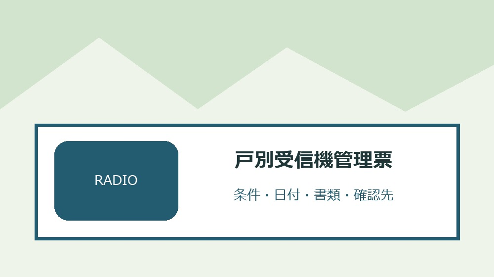
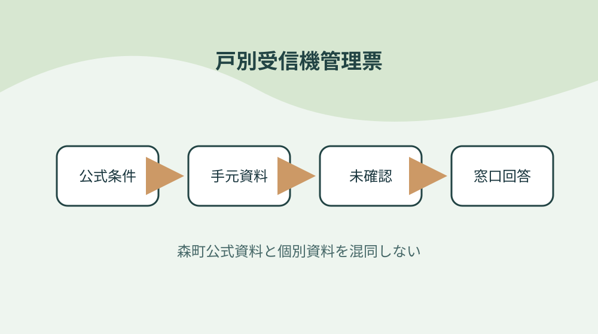
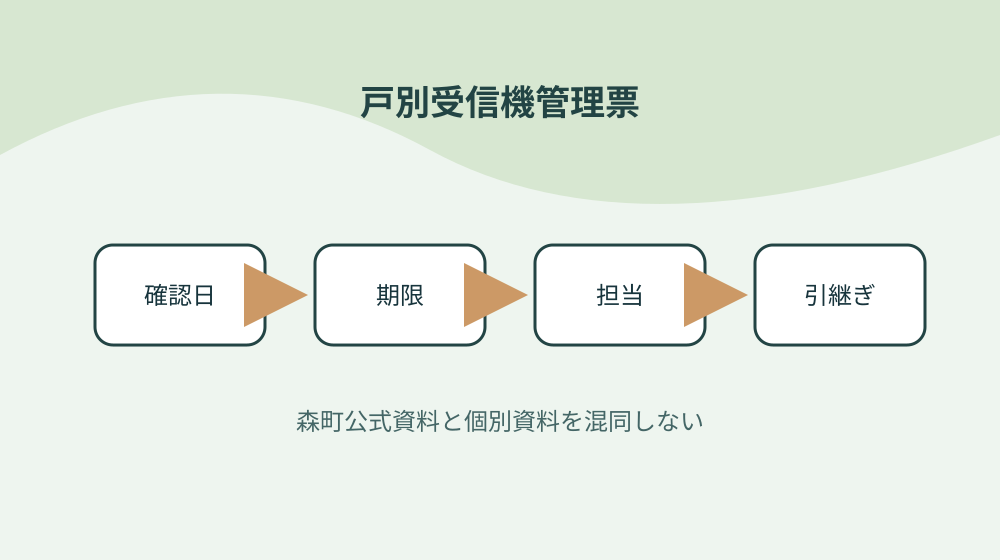

森町の同報無線戸別受信機を貸与・電池・転居で管理する

結論：貸与番号と世帯を結ぶことから始め、故障と電波不良を分ける条件と「森町は町内居住者へ一世帯一台を無償貸与する」の根拠を戸別受信機管理票へ結びます。期限と次の確認先まで一行にすれば、森町の同報無線戸別受信機を貸与・電池・転居で管理する作業の取り違えを減らせます。
貸与番号と世帯を結ぶ
森町公式資料で確認できる事実は「森町は町内居住者へ一世帯一台を無償貸与する」です。貸与番号と世帯を結ぶでは、この条件を戸別受信機管理票の一行へ写し、対象者・対象物・確認日を同じ欄に置きます。制度名だけをメモせず、どの資料のどの条件を確認したかが家族や担当者にもたどれる形にしてください。
貸与番号と世帯を結ぶを確かめるときは、「受領時に設置申請書兼受領書を記入する」という公式条件と、手元の通知・領収書・型番・日付を別列にします。必要資料が揃わなければ空欄を推測で埋めず、戸別受信機管理票へ未確認の理由と次の照会先を記します。この表の役割は結論を急ぐことではなく、森町の同報無線戸別受信機を貸与・電池・転居で管理するで起きる食い違いを安全に発見することです。
戸別受信機管理票の作業日は、①「受信機と説明書は窓口で渡される」の掲載資料と更新日を見る、②貸与番号と世帯を結ぶの手元資料を照合する、③不足一点だけを窓口へ尋ねる、④回答日と担当を追記する順に進めます。共通条件だけで個別可否を断定せず、森町の同報無線戸別受信機を貸与・電池・転居で管理するに関する最新の運用を実行前に確かめます。
戸別受信機管理票を引き継ぐ欄には、「定時放送は七時十五分と十九時三十分」の確認結果、次に行うこと、期限、原本の保管場所を書きます。貸与番号と世帯を結ぶを更新したら旧版を消さず、変更理由と回答した窓口を一行添えます。担当者が替わっても、その事実をどの資料で確かめたかまで戻れるため、同じ問い合わせや書類の取り直しを減らせます。
受領日と説明書を一緒に残す
森町公式資料で確認できる事実は「受信機と説明書は窓口で渡される」です。受領日と説明書を一緒に残すでは、この条件を戸別受信機管理票の一行へ写し、対象者・対象物・確認日を同じ欄に置きます。制度名だけをメモせず、どの資料のどの条件を確認したかが家族や担当者にもたどれる形にしてください。
受領日と説明書を一緒に残すを確かめるときは、「定時放送は七時十五分と十九時三十分」という公式条件と、手元の通知・領収書・型番・日付を別列にします。必要資料が揃わなければ空欄を推測で埋めず、戸別受信機管理票へ未確認の理由と次の照会先を記します。この表の役割は結論を急ぐことではなく、森町の同報無線戸別受信機を貸与・電池・転居で管理するで起きる食い違いを安全に発見することです。
戸別受信機管理票の作業日は、①「チャイムは六時・十二時・十七時・二十一時」の掲載資料と更新日を見る、②受領日と説明書を一緒に残すの手元資料を照合する、③不足一点だけを窓口へ尋ねる、④回答日と担当を追記する順に進めます。共通条件だけで個別可否を断定せず、森町の同報無線戸別受信機を貸与・電池・転居で管理するに関する最新の運用を実行前に確かめます。
戸別受信機管理票を引き継ぐ欄には、「緊急放送は火災や災害時に流れる」の確認結果、次に行うこと、期限、原本の保管場所を書きます。受領日と説明書を一緒に残すを更新したら旧版を消さず、変更理由と回答した窓口を一行添えます。担当者が替わっても、その事実をどの資料で確かめたかまで戻れるため、同じ問い合わせや書類の取り直しを減らせます。
放送種別を聞き分ける
森町公式資料で確認できる事実は「チャイムは六時・十二時・十七時・二十一時」です。放送種別を聞き分けるでは、この条件を戸別受信機管理票の一行へ写し、対象者・対象物・確認日を同じ欄に置きます。制度名だけをメモせず、どの資料のどの条件を確認したかが家族や担当者にもたどれる形にしてください。
放送種別を聞き分けるを確かめるときは、「緊急放送は火災や災害時に流れる」という公式条件と、手元の通知・領収書・型番・日付を別列にします。必要資料が揃わなければ空欄を推測で埋めず、戸別受信機管理票へ未確認の理由と次の照会先を記します。この表の役割は結論を急ぐことではなく、森町の同報無線戸別受信機を貸与・電池・転居で管理するで起きる食い違いを安全に発見することです。
戸別受信機管理票の作業日は、①「無音時は設置場所とアンテナを先に確認する」の掲載資料と更新日を見る、②放送種別を聞き分けるの手元資料を照合する、③不足一点だけを窓口へ尋ねる、④回答日と担当を追記する順に進めます。共通条件だけで個別可否を断定せず、森町の同報無線戸別受信機を貸与・電池・転居で管理するに関する最新の運用を実行前に確かめます。
戸別受信機管理票を引き継ぐ欄には、「故障機は危機管理課へ持参して交換する」の確認結果、次に行うこと、期限、原本の保管場所を書きます。放送種別を聞き分けるを更新したら旧版を消さず、変更理由と回答した窓口を一行添えます。担当者が替わっても、その事実をどの資料で確かめたかまで戻れるため、同じ問い合わせや書類の取り直しを減らせます。
無音時の確認順を決める
森町公式資料で確認できる事実は「無音時は設置場所とアンテナを先に確認する」です。無音時の確認順を決めるでは、この条件を戸別受信機管理票の一行へ写し、対象者・対象物・確認日を同じ欄に置きます。制度名だけをメモせず、どの資料のどの条件を確認したかが家族や担当者にもたどれる形にしてください。
無音時の確認順を決めるを確かめるときは、「故障機は危機管理課へ持参して交換する」という公式条件と、手元の通知・領収書・型番・日付を別列にします。必要資料が揃わなければ空欄を推測で埋めず、戸別受信機管理票へ未確認の理由と次の照会先を記します。この表の役割は結論を急ぐことではなく、森町の同報無線戸別受信機を貸与・電池・転居で管理するで起きる食い違いを安全に発見することです。
戸別受信機管理票の作業日は、①「放送後のブザー三回は電池低下の合図」の掲載資料と更新日を見る、②無音時の確認順を決めるの手元資料を照合する、③不足一点だけを窓口へ尋ねる、④回答日と担当を追記する順に進めます。共通条件だけで個別可否を断定せず、森町の同報無線戸別受信機を貸与・電池・転居で管理するに関する最新の運用を実行前に確かめます。
戸別受信機管理票を引き継ぐ欄には、「町外転出時は受信機を返却する」の確認結果、次に行うこと、期限、原本の保管場所を書きます。無音時の確認順を決めるを更新したら旧版を消さず、変更理由と回答した窓口を一行添えます。担当者が替わっても、その事実をどの資料で確かめたかまで戻れるため、同じ問い合わせや書類の取り直しを減らせます。

ブザー三回を電池交換へつなぐ
森町公式資料で確認できる事実は「放送後のブザー三回は電池低下の合図」です。ブザー三回を電池交換へつなぐでは、この条件を戸別受信機管理票の一行へ写し、対象者・対象物・確認日を同じ欄に置きます。制度名だけをメモせず、どの資料のどの条件を確認したかが家族や担当者にもたどれる形にしてください。
ブザー三回を電池交換へつなぐを確かめるときは、「町外転出時は受信機を返却する」という公式条件と、手元の通知・領収書・型番・日付を別列にします。必要資料が揃わなければ空欄を推測で埋めず、戸別受信機管理票へ未確認の理由と次の照会先を記します。この表の役割は結論を急ぐことではなく、森町の同報無線戸別受信機を貸与・電池・転居で管理するで起きる食い違いを安全に発見することです。
戸別受信機管理票の作業日は、①「町内の別地区へ転居すると機種交換が必要になる」の掲載資料と更新日を見る、②ブザー三回を電池交換へつなぐの手元資料を照合する、③不足一点だけを窓口へ尋ねる、④回答日と担当を追記する順に進めます。共通条件だけで個別可否を断定せず、森町の同報無線戸別受信機を貸与・電池・転居で管理するに関する最新の運用を実行前に確かめます。
戸別受信機管理票を引き継ぐ欄には、「乾電池は停電時の予備電源になる」の確認結果、次に行うこと、期限、原本の保管場所を書きます。ブザー三回を電池交換へつなぐを更新したら旧版を消さず、変更理由と回答した窓口を一行添えます。担当者が替わっても、その事実をどの資料で確かめたかまで戻れるため、同じ問い合わせや書類の取り直しを減らせます。
停電用電池を定期点検する
森町公式資料で確認できる事実は「町内の別地区へ転居すると機種交換が必要になる」です。停電用電池を定期点検するでは、この条件を戸別受信機管理票の一行へ写し、対象者・対象物・確認日を同じ欄に置きます。制度名だけをメモせず、どの資料のどの条件を確認したかが家族や担当者にもたどれる形にしてください。
停電用電池を定期点検するを確かめるときは、「乾電池は停電時の予備電源になる」という公式条件と、手元の通知・領収書・型番・日付を別列にします。必要資料が揃わなければ空欄を推測で埋めず、戸別受信機管理票へ未確認の理由と次の照会先を記します。この表の役割は結論を急ぐことではなく、森町の同報無線戸別受信機を貸与・電池・転居で管理するで起きる食い違いを安全に発見することです。
戸別受信機管理票の作業日は、①「標準は単二電池二本である」の掲載資料と更新日を見る、②停電用電池を定期点検するの手元資料を照合する、③不足一点だけを窓口へ尋ねる、④回答日と担当を追記する順に進めます。共通条件だけで個別可否を断定せず、森町の同報無線戸別受信機を貸与・電池・転居で管理するに関する最新の運用を実行前に確かめます。
戸別受信機管理票を引き継ぐ欄には、「単一・単三は端子部品を組み替えて装着する」の確認結果、次に行うこと、期限、原本の保管場所を書きます。停電用電池を定期点検するを更新したら旧版を消さず、変更理由と回答した窓口を一行添えます。担当者が替わっても、その事実をどの資料で確かめたかまで戻れるため、同じ問い合わせや書類の取り直しを減らせます。
故障と電波不良を分ける
森町公式資料で確認できる事実は「標準は単二電池二本である」です。故障と電波不良を分けるでは、この条件を戸別受信機管理票の一行へ写し、対象者・対象物・確認日を同じ欄に置きます。制度名だけをメモせず、どの資料のどの条件を確認したかが家族や担当者にもたどれる形にしてください。
故障と電波不良を分けるを確かめるときは、「単一・単三は端子部品を組み替えて装着する」という公式条件と、手元の通知・領収書・型番・日付を別列にします。必要資料が揃わなければ空欄を推測で埋めず、戸別受信機管理票へ未確認の理由と次の照会先を記します。この表の役割は結論を急ぐことではなく、森町の同報無線戸別受信機を貸与・電池・転居で管理するで起きる食い違いを安全に発見することです。
戸別受信機管理票の作業日は、①「森町は町内居住者へ一世帯一台を無償貸与する」の掲載資料と更新日を見る、②故障と電波不良を分けるの手元資料を照合する、③不足一点だけを窓口へ尋ねる、④回答日と担当を追記する順に進めます。共通条件だけで個別可否を断定せず、森町の同報無線戸別受信機を貸与・電池・転居で管理するに関する最新の運用を実行前に確かめます。
戸別受信機管理票を引き継ぐ欄には、「受領時に設置申請書兼受領書を記入する」の確認結果、次に行うこと、期限、原本の保管場所を書きます。故障と電波不良を分けるを更新したら旧版を消さず、変更理由と回答した窓口を一行添えます。担当者が替わっても、その事実をどの資料で確かめたかまで戻れるため、同じ問い合わせや書類の取り直しを減らせます。
町内転居時の交換を忘れない
森町公式資料で確認できる事実は「森町は町内居住者へ一世帯一台を無償貸与する」です。町内転居時の交換を忘れないでは、この条件を戸別受信機管理票の一行へ写し、対象者・対象物・確認日を同じ欄に置きます。制度名だけをメモせず、どの資料のどの条件を確認したかが家族や担当者にもたどれる形にしてください。
町内転居時の交換を忘れないを確かめるときは、「受領時に設置申請書兼受領書を記入する」という公式条件と、手元の通知・領収書・型番・日付を別列にします。必要資料が揃わなければ空欄を推測で埋めず、戸別受信機管理票へ未確認の理由と次の照会先を記します。この表の役割は結論を急ぐことではなく、森町の同報無線戸別受信機を貸与・電池・転居で管理するで起きる食い違いを安全に発見することです。
戸別受信機管理票の作業日は、①「受信機と説明書は窓口で渡される」の掲載資料と更新日を見る、②町内転居時の交換を忘れないの手元資料を照合する、③不足一点だけを窓口へ尋ねる、④回答日と担当を追記する順に進めます。共通条件だけで個別可否を断定せず、森町の同報無線戸別受信機を貸与・電池・転居で管理するに関する最新の運用を実行前に確かめます。
戸別受信機管理票を引き継ぐ欄には、「定時放送は七時十五分と十九時三十分」の確認結果、次に行うこと、期限、原本の保管場所を書きます。町内転居時の交換を忘れないを更新したら旧版を消さず、変更理由と回答した窓口を一行添えます。担当者が替わっても、その事実をどの資料で確かめたかまで戻れるため、同じ問い合わせや書類の取り直しを減らせます。
町外転出時の返却を記録する
森町公式資料で確認できる事実は「受信機と説明書は窓口で渡される」です。町外転出時の返却を記録するでは、この条件を戸別受信機管理票の一行へ写し、対象者・対象物・確認日を同じ欄に置きます。制度名だけをメモせず、どの資料のどの条件を確認したかが家族や担当者にもたどれる形にしてください。
町外転出時の返却を記録するを確かめるときは、「定時放送は七時十五分と十九時三十分」という公式条件と、手元の通知・領収書・型番・日付を別列にします。必要資料が揃わなければ空欄を推測で埋めず、戸別受信機管理票へ未確認の理由と次の照会先を記します。この表の役割は結論を急ぐことではなく、森町の同報無線戸別受信機を貸与・電池・転居で管理するで起きる食い違いを安全に発見することです。
戸別受信機管理票の作業日は、①「チャイムは六時・十二時・十七時・二十一時」の掲載資料と更新日を見る、②町外転出時の返却を記録するの手元資料を照合する、③不足一点だけを窓口へ尋ねる、④回答日と担当を追記する順に進めます。共通条件だけで個別可否を断定せず、森町の同報無線戸別受信機を貸与・電池・転居で管理するに関する最新の運用を実行前に確かめます。
戸別受信機管理票を引き継ぐ欄には、「緊急放送は火災や災害時に流れる」の確認結果、次に行うこと、期限、原本の保管場所を書きます。町外転出時の返却を記録するを更新したら旧版を消さず、変更理由と回答した窓口を一行添えます。担当者が替わっても、その事実をどの資料で確かめたかまで戻れるため、同じ問い合わせや書類の取り直しを減らせます。

家族の連絡先を管理票へ書く
森町公式資料で確認できる事実は「チャイムは六時・十二時・十七時・二十一時」です。家族の連絡先を管理票へ書くでは、この条件を戸別受信機管理票の一行へ写し、対象者・対象物・確認日を同じ欄に置きます。制度名だけをメモせず、どの資料のどの条件を確認したかが家族や担当者にもたどれる形にしてください。
家族の連絡先を管理票へ書くを確かめるときは、「緊急放送は火災や災害時に流れる」という公式条件と、手元の通知・領収書・型番・日付を別列にします。必要資料が揃わなければ空欄を推測で埋めず、戸別受信機管理票へ未確認の理由と次の照会先を記します。この表の役割は結論を急ぐことではなく、森町の同報無線戸別受信機を貸与・電池・転居で管理するで起きる食い違いを安全に発見することです。
戸別受信機管理票の作業日は、①「無音時は設置場所とアンテナを先に確認する」の掲載資料と更新日を見る、②家族の連絡先を管理票へ書くの手元資料を照合する、③不足一点だけを窓口へ尋ねる、④回答日と担当を追記する順に進めます。共通条件だけで個別可否を断定せず、森町の同報無線戸別受信機を貸与・電池・転居で管理するに関する最新の運用を実行前に確かめます。
戸別受信機管理票を引き継ぐ欄には、「故障機は危機管理課へ持参して交換する」の確認結果、次に行うこと、期限、原本の保管場所を書きます。家族の連絡先を管理票へ書くを更新したら旧版を消さず、変更理由と回答した窓口を一行添えます。担当者が替わっても、その事実をどの資料で確かめたかまで戻れるため、同じ問い合わせや書類の取り直しを減らせます。
良い点
森町公式資料で確認できる事実は「無音時は設置場所とアンテナを先に確認する」です。良い点では、この条件を戸別受信機管理票の一行へ写し、対象者・対象物・確認日を同じ欄に置きます。制度名だけをメモせず、どの資料のどの条件を確認したかが家族や担当者にもたどれる形にしてください。
良い点を確かめるときは、「故障機は危機管理課へ持参して交換する」という公式条件と、手元の通知・領収書・型番・日付を別列にします。必要資料が揃わなければ空欄を推測で埋めず、戸別受信機管理票へ未確認の理由と次の照会先を記します。この表の役割は結論を急ぐことではなく、森町の同報無線戸別受信機を貸与・電池・転居で管理するで起きる食い違いを安全に発見することです。
戸別受信機管理票の作業日は、①「放送後のブザー三回は電池低下の合図」の掲載資料と更新日を見る、②良い点の手元資料を照合する、③不足一点だけを窓口へ尋ねる、④回答日と担当を追記する順に進めます。共通条件だけで個別可否を断定せず、森町の同報無線戸別受信機を貸与・電池・転居で管理するに関する最新の運用を実行前に確かめます。
戸別受信機管理票を引き継ぐ欄には、「町外転出時は受信機を返却する」の確認結果、次に行うこと、期限、原本の保管場所を書きます。良い点を更新したら旧版を消さず、変更理由と回答した窓口を一行添えます。担当者が替わっても、その事実をどの資料で確かめたかまで戻れるため、同じ問い合わせや書類の取り直しを減らせます。
注文したい点
森町公式資料で確認できる事実は「放送後のブザー三回は電池低下の合図」です。注文したい点では、この条件を戸別受信機管理票の一行へ写し、対象者・対象物・確認日を同じ欄に置きます。制度名だけをメモせず、どの資料のどの条件を確認したかが家族や担当者にもたどれる形にしてください。
注文したい点を確かめるときは、「町外転出時は受信機を返却する」という公式条件と、手元の通知・領収書・型番・日付を別列にします。必要資料が揃わなければ空欄を推測で埋めず、戸別受信機管理票へ未確認の理由と次の照会先を記します。この表の役割は結論を急ぐことではなく、森町の同報無線戸別受信機を貸与・電池・転居で管理するで起きる食い違いを安全に発見することです。
戸別受信機管理票の作業日は、①「町内の別地区へ転居すると機種交換が必要になる」の掲載資料と更新日を見る、②注文したい点の手元資料を照合する、③不足一点だけを窓口へ尋ねる、④回答日と担当を追記する順に進めます。共通条件だけで個別可否を断定せず、森町の同報無線戸別受信機を貸与・電池・転居で管理するに関する最新の運用を実行前に確かめます。
戸別受信機管理票を引き継ぐ欄には、「乾電池は停電時の予備電源になる」の確認結果、次に行うこと、期限、原本の保管場所を書きます。注文したい点を更新したら旧版を消さず、変更理由と回答した窓口を一行添えます。担当者が替わっても、その事実をどの資料で確かめたかまで戻れるため、同じ問い合わせや書類の取り直しを減らせます。
対案・結論
戸別受信機管理票は、全項目を一度で完成させるより、「貸与番号と世帯を結ぶ」から確定する方が実用的です。公式条件、手元資料、窓口回答を別欄にし、受領時に設置申請書兼受領書を記入するという事実と個別事情の食い違いを消さずに残してください。
故障と電波不良を分けるに費用や契約が伴う場合は、対象・期限・事前手続を再確認してから進めます。森町の共通案内だけで個別案件を断定せず、無音時は設置場所とアンテナを先に確認するという確認済み情報と手元資料を示して尋ねます。
結論は、家族の連絡先を管理票へ書くまでを今日の一行にし、次の確認日を決めることです。戸別受信機管理票があれば、森町の同報無線戸別受信機を貸与・電池・転居で管理するの作業を家族や社内担当が同じ根拠から続けられます。
単一・単三は端子部品を組み替えて装着するという条件が更新された場合は旧版を削除せず、変更日と採用理由を記します。戸別受信機管理票に履歴が残れば、古い書類や判断を使った理由も後から説明できます。
大石の視点
ここまでの「森町は町内居住者へ一世帯一台を無償貸与する」などの制度条件は森町公式資料で確認できる事実です。以下は、私、大石浩之が戸別受信機管理票を運用するためにすすめる方法であり、森町や関係機関の公式見解ではありません。
私は戸別受信機管理票を紙一枚から始め、受領日と説明書を一緒に残すの原本を動かさず、写しや写真へ番号を付ける方法を勧めます。森町の同報無線戸別受信機を貸与・電池・転居で管理するの確認で原本を持ち歩く回数を減らせるからです。
町内転居時の交換を忘れないに未確認欄が残っても失敗扱いしません。確認先と期限が書かれた未確認欄は、故障機は危機管理課へ持参して交換するを根拠なく個別案件へ当てはめるより価値があります。
最後に、戸別受信機管理票に含む個人情報や事業情報は共有範囲を決めます。家族の連絡先を管理票へ書くための内部版と外部提出版を同じファイルにせず、必要部分だけを渡せる構成にしてください。
よくある質問
戸別受信機管理票で最初に確認することは何ですか。
対象者・対象物、基準日、手元資料、森町公式の条件を一行にします。森町は町内居住者へ一世帯一台を無償貸与するという共通条件を起点にしつつ、個別の可否は資料と窓口回答で確定します。
資料が足りないまま戸別受信機管理票を作れますか。
作れます。放送種別を聞き分けるに不足があれば未確認と記し、必要資料、確認先、確認期限を残します。推測で埋めないことが、戸別受信機管理票から安全に作業を再開する条件です。
森町公式ページを保存すれば再確認は不要ですか。
単一・単三は端子部品を組み替えて装着するなどの条件は変わることがあります。戸別受信機管理票へURL、ページ名、確認日を残し、故障と電波不良を分けるを実行する直前に現行案内を再確認してください。
戸別受信機管理票を家族や担当者へ渡すとき何を添えますか。
家族の連絡先を管理票へ書くため、確認済み事実、未確認事項、期限、次の担当、原本の保管場所、町へ尋ねた日と回答を添えます。戸別受信機管理票に含む個人情報は渡す相手と保管方法を限定します。
公式情報源
- 同報無線戸別受信機について（2026年8月19日確認）
- 同報無線戸別受信機の電池交換について（2026年8月19日確認）
最終確認日：2026-08-19 ／ 公表事実と執筆者の解釈・意見を分けて記載しています。